Die Personen
Oberstabsgefreiter Leon Sander, 28 Jahre, Panzergrenadier, seit acht Jahren Soldat. 182 cm, 82 kg, Blutgruppe A+, Penicillinallergie.Hauptgefreiter Jonas König, Kamerad von Leon.
Eine Explosion im Einsatzgebiet
Eine Gruppe Soldaten ist in einem fiktiven Einsatzgebiet unterwegs. Plötzlich kommt es zu einer Explosion. Die Druckwelle schleudert Leon zu Boden. Mehrere Splitter treffen ihn. Insgesamt werden vier Soldaten verletzt.
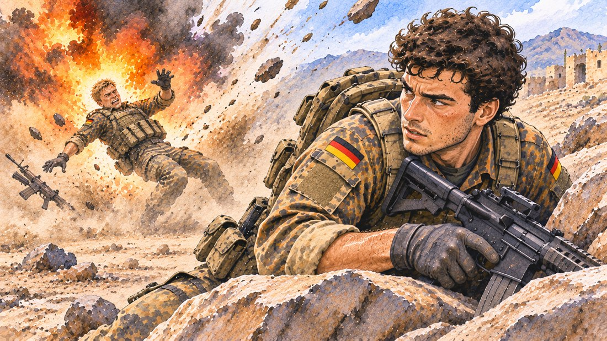
Jonas bleibt unverletzt. Er bemerkt eine stark blutende Wunde am rechten Oberschenkel seines Kameraden. Leon hat außerdem eine Wunde am linken Unterarm, Schmerzen im Brustkorb und Atemnot. Jonas legt ein Tourniquet an. Die starke Blutung wird gestoppt. Gemeinsam mit anderen Soldaten bringt er Leon an einen geschützteren Ort.
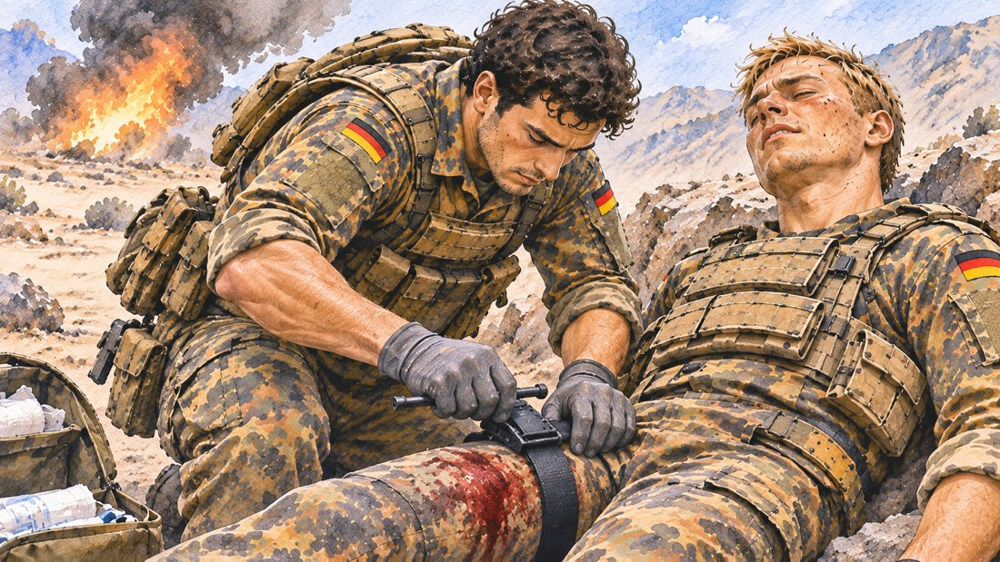
Leon ist wach und ansprechbar, wird aber zunehmend blass. Er atmet schneller, ihm ist schwindelig, er friert und hat großen Durst. Jonas deckt ihn mit einer Rettungsdecke zu, beruhigt ihn und beobachtet seinen Zustand. Der Sanitätsdienst ist alarmiert. Als die Sanitäter eintreffen, übergibt Jonas ihnen die Informationen über den Unfall und die bisherigen Maßnahmen.
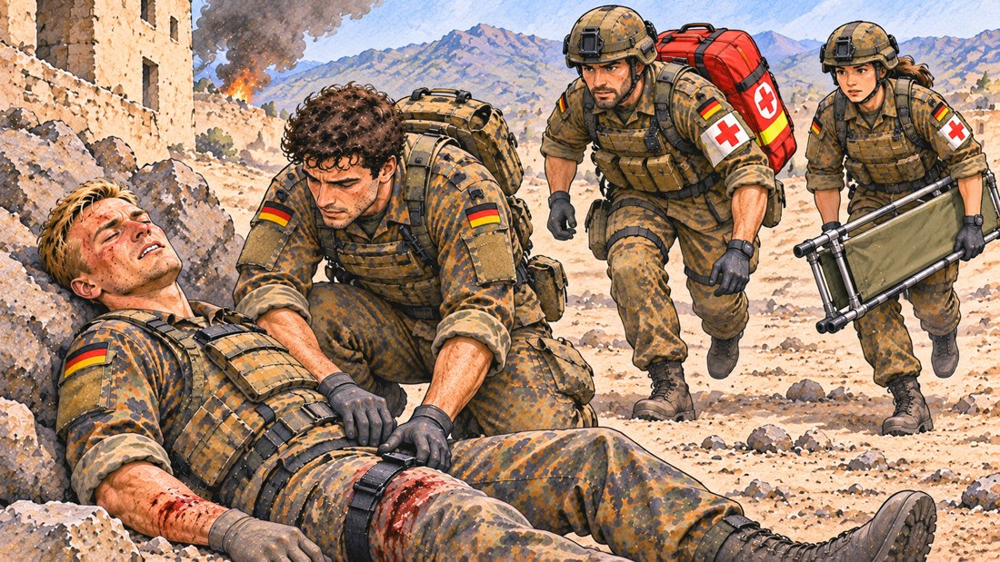
Explosionsverletzungen
Primäre Explosionsverletzungen entstehen durch die Druckwelle selbst, besonders an luftgefüllten Organen wie Lunge und Ohr. Sekundäre Verletzungen entstehen durch Splitter und andere herumfliegende Gegenstände. Tertiäre Verletzungen entstehen, wenn der Körper durch die Explosion weggeschleudert wird und auf Gegenstände oder den Boden trifft. Quartäre Verletzungen umfassen weitere Folgen wie Verbrennungen, Rauchvergiftungen und bestimmte Quetschverletzungen.
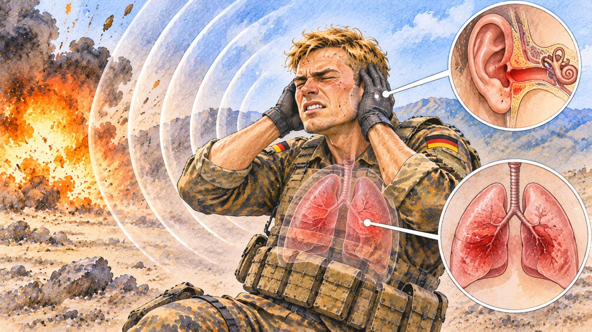
Primär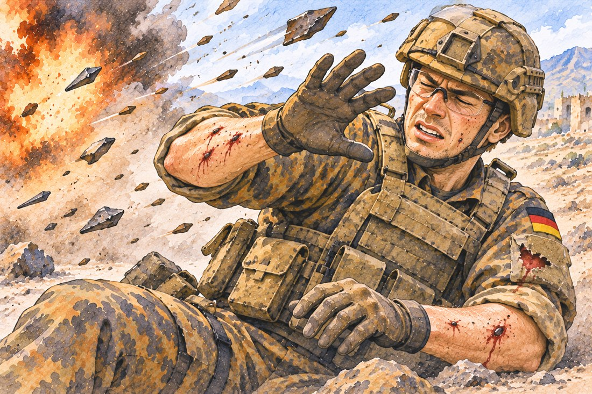
Sekundär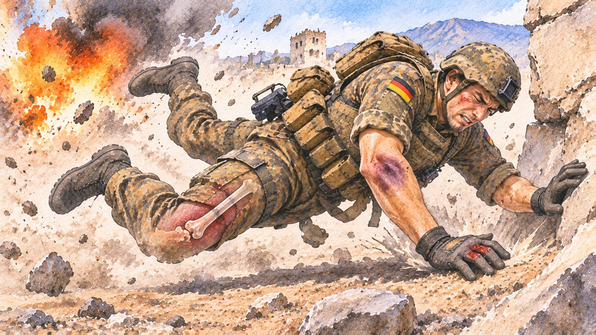
TertiärSelbst- und Kameradenhilfe
Bei der Erstversorgung sind Eigenschutz und die Einschätzung der Gefahrenlage wichtig. Verwundete können sich, wenn möglich, selbst helfen. Kameraden leisten Hilfe und alarmieren den Sanitätsdienst. Lebensbedrohliche Blutungen haben hohe Priorität.
Blutstillung und Blutungsschock
Zur Blutstillung gehören direkter Druck, Druckverband, Tourniquet und Wundtamponade mit geeigneter Gaze. Ein Tourniquet dient der Kontrolle lebensbedrohlicher Blutungen an Extremitäten. Hämostatische Gaze unterstützt die Blutgerinnung. Ein hoher Blutverlust kann einen Blutungsschock verursachen. Typische Hinweise sind Blässe, beschleunigte Atmung, Schwindel und kalte Haut. Wärmeerhalt und schnelle professionelle Versorgung sind wichtig.
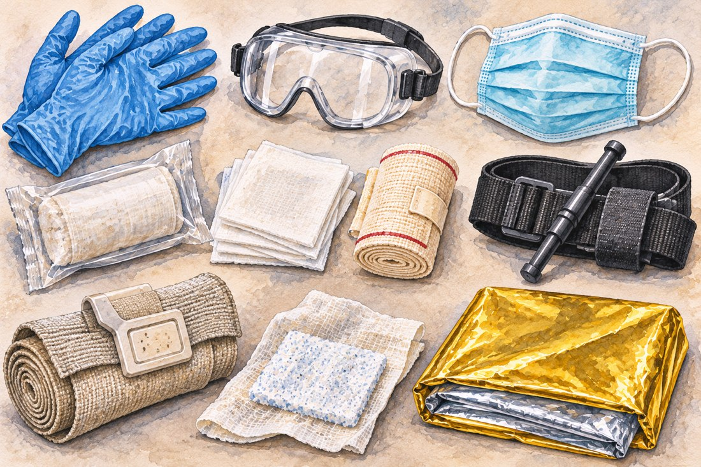
Schutzausrüstung und Verbandmaterial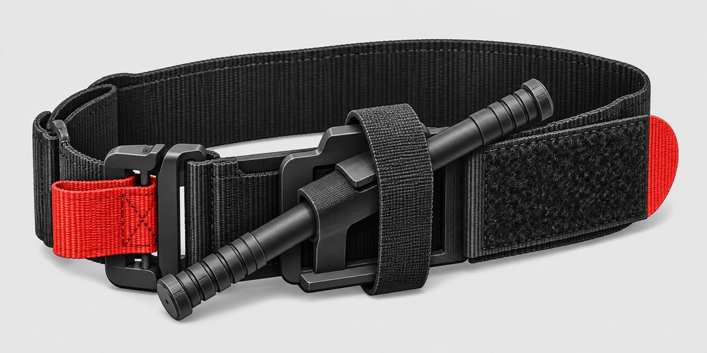
Tourniquet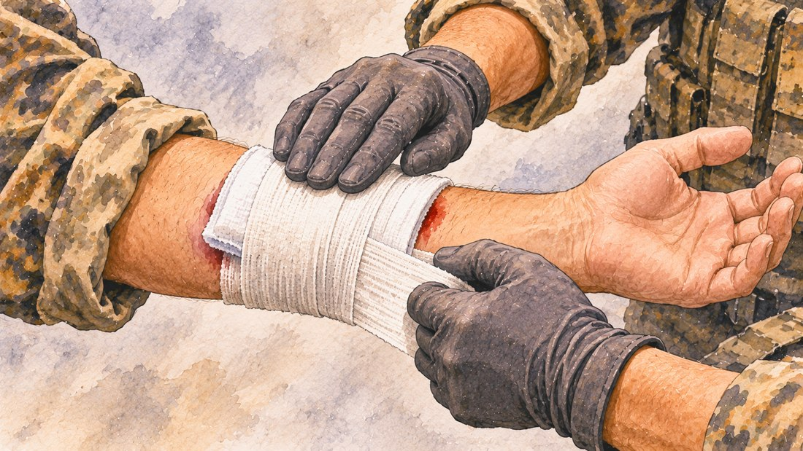
Druckverband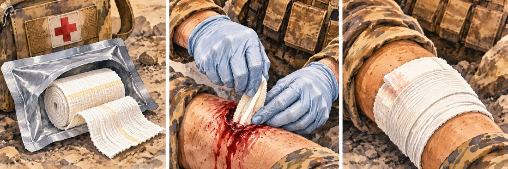
Wundtamponade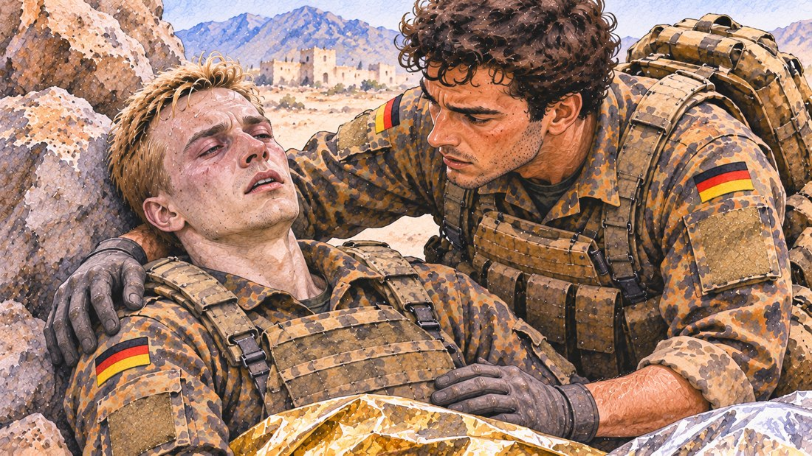
BlutungsschockTactical Combat Casualty Care (TCCC)
Care Under Fire (CUF): Versorgung unter unmittelbarer Bedrohung. Tactical Field Care (TFC): Versorgung in einer relativ geschützten Umgebung. Tactical Evacuation Care (TACEVAC): Versorgung während der Evakuierung. Die Maßnahmen richten sich nach der Lage und dem Ausbildungsstand.
Fiktiver Fall für den Sprachunterricht. Die Illustrationen und Texte ersetzen keine medizinische Ausbildung oder geltende Einsatzrichtlinien.
1A – Ordnen Sie die Nomen den Definitionen zu.
1. Welle mit starkem Druck 2. kleine Teile eines zerstörten Gegenstands 3. Verlust von Blut 4. Stoppen einer Blutung 5. Schutz der eigenen Person 6. Schwierigkeiten beim Atmen 7. Situation mit möglichen Gefahren 8. erste medizinische Hilfe 9. Kreislaufstörung durch starken Blutverlust 10. Ausfüllen einer Wunde mit geeignetem Material 2 – Richtig oder falsch?
1. Jonas wird bei der Explosion schwer verletzt. 2. Leon verliert das Bewusstsein. 3. Die Druckwelle schleudert Leon zu Boden. 4. Leon hat eine Wunde am linken Unterarm. 5. Die starke Blutung befindet sich am linken Bein. 6. Jonas legt ein Tourniquet an. 7. Leon wird zunehmend blass. 8. Leon bekommt Wasser zu trinken. 9. Jonas misst den Blutdruck. 10. Eine Rettungsdecke dient dem Wärmeerhalt. 11. Primäre Verletzungen entstehen durch Splitter. 12. Sekundäre Verletzungen können durch Splitter entstehen. 13. Tertiäre Verletzungen können beim Aufprall entstehen. 14. Eigenschutz ist wichtig. 15. TACEVAC bezeichnet die Versorgung vor der Evakuierung ausschließlich am Unfallort. 3 – Wählen Sie die richtige Antwort.
1. Wie viele Soldaten werden verletzt? 2. Wo ist die starke Blutung? 3. Was legt Jonas an? 4. Was verursacht primäre Explosionsverletzungen? 5. Was ist ein Hinweis auf Blutungsschock? 6. Wozu dient die Rettungsdecke? 7. Was ist eine sekundäre Verletzung? 8. Was bedeutet TFC? 9. Wie ist Leon bei der Übergabe? 10. Wer übernimmt die Versorgung? 4 – Ordnen Sie die Begriffe den Bildern zu.
1. 2. 3. 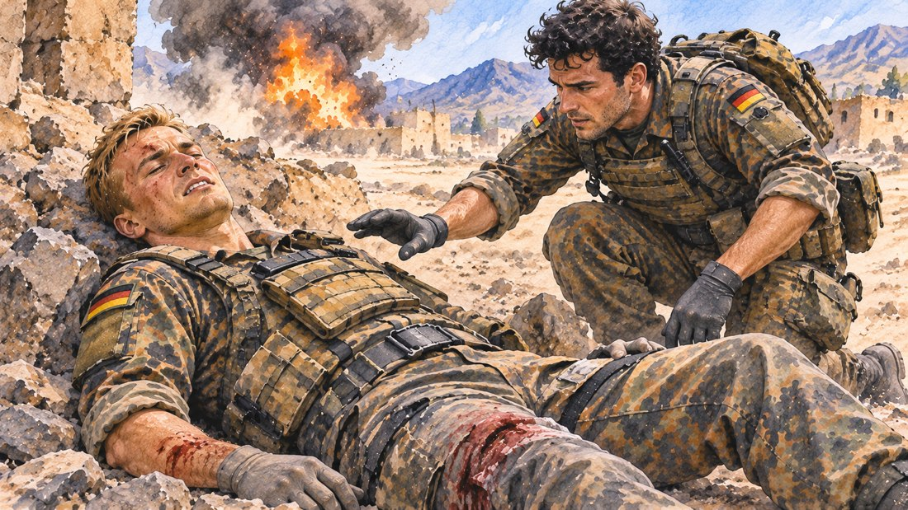
4. 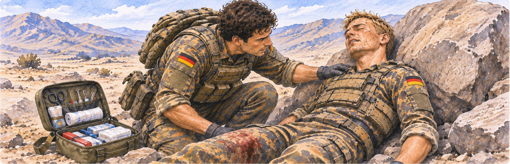
5. 6. 7. 8. 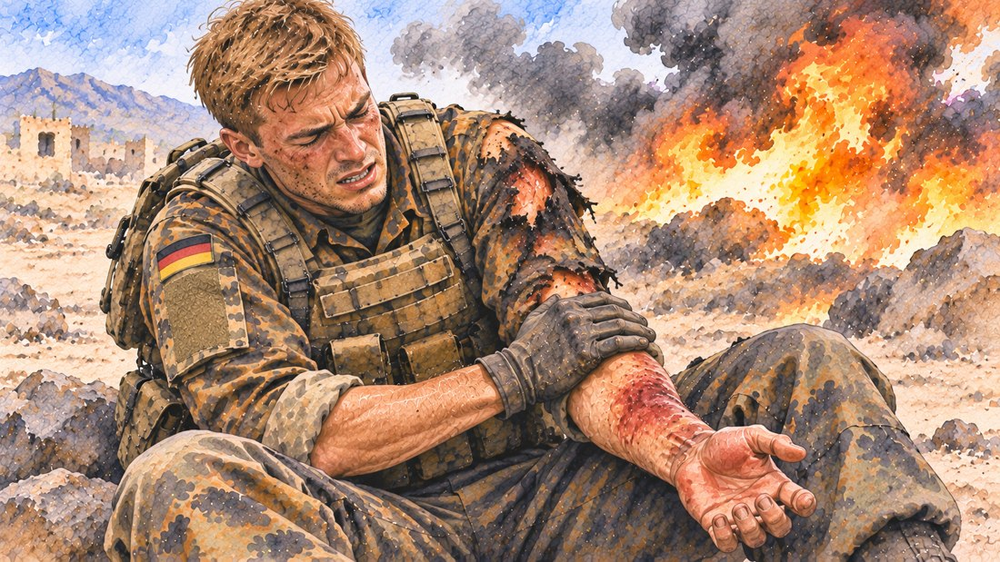
9. 10. 11. 12. 13. 14. 5 – Welche Explosionsverletzung liegt vor?
1. Lungenschädigung durch Druckwelle 2. Metallsplitter im Arm 3. Verbrennung durch Hitze 4. Knochenbruch durch Aufprall nach Wegschleudern 5. Rauchvergiftung 6. Glassplitter in der Haut 7. Trommelfellschaden durch Druckwelle 8. Verletzung beim Aufprall auf eine Mauer 9. Verbrennung durch Feuer 10. Wunde durch herumfliegendes Metall 6A – Bringen Sie die Ereignisse in die richtige Reihenfolge. Geben Sie die Position an.
1. Jonas legt ein Tourniquet an. 2. Sanitäter treffen ein. 3. Eine Explosion ereignet sich. 4. Jonas beruhigt und beobachtet Leon. 5. Leon wird weggeschleudert und von Splittern getroffen. 6. Leon wird an einen geschützteren Ort gebracht. 7. Die Soldaten sind unterwegs. 8. Jonas bemerkt die starke Blutung. 6B – Ordnen Sie die TCCC-Phase zu.
1. Versorgung während des Transports 2. Versorgung unter unmittelbarer Bedrohung 3. Versorgung in relativ geschützter Umgebung 4. Unmittelbare Gefahrenlage 5. Medizinische Betreuung während der Evakuierung 6. Weitere Untersuchung in geschützter Umgebung 7. Hilfe unter unmittelbarer Bedrohung 8. Versorgung abseits unmittelbarer Bedrohung 9. Überwachung während der Evakuierung Transkript anzeigen
So eine Scheiße … Fuck!!
Leon, hey Leon … Kannst du mich hören?
Ja, ich kann dich hören. Was ist passiert?
Es hat 'ne Explosion gegeben. Du bist von mehreren Splittern getroffen worden. Ich hab die Blutung an deinem Bein gestoppt. Wo hast du sonst noch Schmerzen?
Mein linker Unterarm tut weh. Und ich hab Schmerzen im Brustkorb, besonders beim Einatmen.
Kriegst du schlecht Luft?
Ja, ein bisschen. Und mir ist ziemlich schwindlig.
Ist dir auch übel?
Nee, aber mir ist total kalt.
Ich deck dich mit 'ner Rettungsdecke zu. Versuch, möglichst ruhig zu bleiben. Der Sanitätsdienst ist bereits alarmiert.
Was is mit meinem Bein? Ich hab das Gefühl, dass die Schmerzen immer stärker werden.
Du hast 'ne stark blutende Wunde am rechten Oberschenkel. Ich hab dir deshalb 'n Tourniquet angelegt. Die starke Blutung ist jetzt gestoppt.
Sind noch andere verletzt worden?
Ja, noch drei andere. Die werden ebenfalls versorgt.
Wie lange dauert's noch, bis die Sanitäter hier sind?
Das kann ich dir im Moment nich genau sagen. Aber sie sind unterwegs. Ich bleib bei dir.
Kannst du mir was zu trinken geben? Ich hab großen Durst.
Im Moment lieber nich. Wir sollten warten, bis dich das Sanitätspersonal untersucht hat.
Okay … So'n Mist.
Leon, sag mir sofort Bescheid, wenn du schlechter Luft kriegst oder sich die Schmerzen verändern.
Mach ich. Danke, Jonas.
Wir schaffen das. Ich bleib bei dir.
7A – Hören Sie. Richtig oder falsch?
1. Leon kann Jonas hören. 2. Leon hat Schmerzen beim Einatmen. 3. Leon ist übel. 4. Jonas deckt Leon zu. 5. Jonas gibt Leon Wasser. Transkript anzeigen
Sanitäter: Hey! Was ist passiert?
Jonas: Vor ungefähr zwölf Minuten hat's 'ne Explosion gegeben. Die Druckwelle hat ihn zu Boden geschleudert. Er hat mehrere Splitter abbekommen.
Sanitäter: Okay. Wen haben wir hier?
Jonas: Oberstabsgefreiter Leon Sander, 28 Jahre alt.
Sanitäter: Was hat er für Verletzungen?
Jonas: 'Ne stark blutende Wunde am rechten Oberschenkel und noch 'ne Wunde am linken Unterarm. Außerdem hat er Schmerzen im Brustkorb und kriegt schlecht Luft.
Sanitäter: Was hast du bisher gemacht?
Jonas: Ich hab ihm 'n Tourniquet am rechten Oberschenkel angelegt. Dann haben wir ihn hierhergebracht und mit 'ner Rettungsdecke zugedeckt.
Sanitäter: Wann hast du das Tourniquet angelegt?
Jonas: Um 10:42 Uhr. Steht auch auf dem Tourniquet.
Sanitäter: Okay, gut. Hat's danach noch stark geblutet?
Jonas: Nee, seitdem eigentlich nich mehr.
Sanitäter: War er zwischendurch mal bewusstlos?
Jonas: Nee, er war die ganze Zeit wach und ansprechbar. Aber er is in den letzten Minuten deutlich blasser geworden.
Sanitäter: Und die Atmung?
Jonas: Er atmet jetzt schneller als direkt nach der Explosion. Ihm is schwindlig, er friert und hat tierischen Durst.
Sanitäter: Hat er was gegessen oder getrunken? Irgendwelche Medikamente gekriegt?
Jonas: Nee, gar nichts.
Sanitäter: Hast du schon irgendwelche Vitalparameter gemessen?
Jonas: Nee, ich hatte nichts dabei, womit ich die hätte messen können.
Sanitäter: Weißt du was über Vorerkrankungen oder Allergien?
Jonas: Nee, keine Ahnung.
Sanitäter: Alles klar. Danke dir. Wir übernehmen jetzt.
Jonas: Soll ich noch hierbleiben?
Sanitäter: Ja, bleib mal noch kurz da. Kann sein, dass wir noch Fragen haben.
8A – Wählen Sie die richtige Antwort.
1. Wie lange liegt die Explosion zurück? 2. Wie alt ist Leon? 3. Wie war sein Bewusstseinszustand? 4. Wie hat sich seine Hautfarbe verändert? 5. Hat Jonas Vitalparameter gemessen? 10 – Ergänzen Sie die Konjunktionen. Verwenden Sie jede einmal.
1. Jonas legt Leon ein Tourniquet an, dieser eine lebensbedrohliche Blutung hat. 2. Leon starke Schmerzen hat, bleibt er bei Bewusstsein und ansprechbar. 3. Jonas deckt seinen Kameraden mit einer Rettungsdecke zu, dieser nicht weiter auskühlt. 4. Jonas die Blutung gestoppt hat, wird Leon an einen geschützteren Ort gebracht. 5. die beiden auf das Sanitätspersonal warten, beobachtet Jonas den Zustand seines Kameraden. 6. Der Sanitäter möchte wissen, Leon zwischenzeitlich bewusstlos war. 7. Jonas bittet Leon, ihm sofort Bescheid zu sagen, sich seine Atmung verschlechtert. 8. das Sanitätspersonal eintrifft, kann die weitere medizinische Versorgung beginnen. 9. Jonas möchte warten, bis das Sanitätspersonal Leon untersucht hat, er ihm etwas zu trinken gibt. 10. Jonas stellt fest, sein Kamerad in den letzten Minuten deutlich blasser geworden ist. Leon Sander – 28 Jahre
Blutgruppe A+; Penicillinallergie. Wach und ansprechbar, zunehmend blass, beschleunigte Atmung. Keine Übelkeit. Rettungsdecke, keine Medikamente, keine Nahrungs- oder Flüssigkeitsaufnahme, keine gemessenen Vitalparameter.
11 – Ziehen Sie die passenden Angaben in die Patientenakte.
1. Dienstgrad 2. Körpergröße 3. Körpergewicht 4. Ursache der Verwundung 5. Lokalisation der starken Blutung 6. Weitere äußere Wunde 7. Beschwerden im Brustkorb (zwei Angaben) 8. Weitere subjektive Beschwerden (drei Angaben) 9. Maßnahme zur Blutstillung 10. Zeitpunkt der Maßnahme